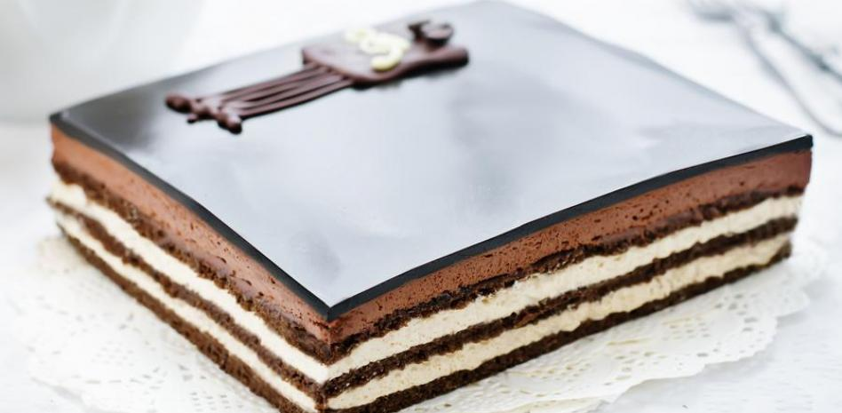

The definitive Opera cake recipe

Description
The French pastries treasures wonders like the opera
created by Gaston Lenotre in the 50s of the last century. The
original recipe consists of 10 thin layers of gioconda sponge dipped in syrup anfilled with
chocolate ganache and coffee buttercream. it is a somewhat elaborate but delicious cake that
fits into any celebration.
Ingredients
For the gioconda cake:
- 4 Eggs
- 3 Clear
- 125 Grams of powdered almonds
- 125 Grams if icing sugar
- 20 Grams of butter
- 30 Grams of flour
For de chocolate ganache:
- 120 Milliliters of cream
- 120 Grams of chocolate
For the coffee buttercream
- 4 Yolks
- 100 grams of sugar
- 30 milliliters of water
- 160 Grams of butter
- 2 Teaspoons of coffee
- 1 Teaspoon vanilla extract
For the frosting:
- 130 Grams of chocolate
- 15 Grams of sunflower oil
Preparation
-
In a large bowl, crack the 4 eggs, add the sugar, the powdered almonds
and beat until thr mixture double in volumen.
-
melt the butter for a few seconds in the micirowave and to the bowl.
-
Add the sifted flour and mix with a spatula.
-
Assembled the whites until stiff and add to the bowl, and mix so that the ingredients are well intregated.
-
In a suitable baking tray and on a paper suitable for the oven, pour two-thirds of the dough. Extend until you
get a 10-by-18.inch rectangle.
-
repear for another tray.
-
In the preheated oven, bake both trays for 10 minutess at 180 degrees. Then, cover with plastic wrap so
that cake does not dry out and reserve.
-
in a saucepan, heat the cream without bringing it to a boil.When it's hot, add the chopped chocolate. mix with a few rods,
until the chocolate melts. then, remove from the heat let it cool down to room temperature.
-
For the syrup, in another bowl, mix the coffee, sugar and rum.
-
For the butter and coffee cream, pour the yolks into a bowl.
in a saucepan pour the water and sugar, and when it boils, pour the
mixture over the yolks and beat vigorously until the yolks turn whiter and double in volumen.
little by little add the butter and continue beating. once the butter is integrated, add the coffee,
vanilla and beat again.
-
With the help of a square pastry mold, cut 3 squares of gioconda sponge cake.
-
the time has come to assemble the cake. In the tray that
you are going to serve the cake, place a layer of sponge cake and paint with the syrup
until it is soaked.
-
pour half of the buttercream over the cake layer (you can use a pastry bag) and
smooth the surface.
-
Place another layer of sponge cake and press lightly on the cream, in order to haveuniform layers.
Soak the cake in syrup and pour the ganache on top. Smooth the surface.
-
place the last layer of cake, repeat the operation and reserve in the fridge for 2 hours.
-
For the glaze, melt the chocolate, add the oil and mix.
-
Take the cake out of the fridge and pour the chocolate over the surface.
Reserve in the fridge for about 15 minutes.
-
Unmold and go over the edges with a knife so that they are even and clean.